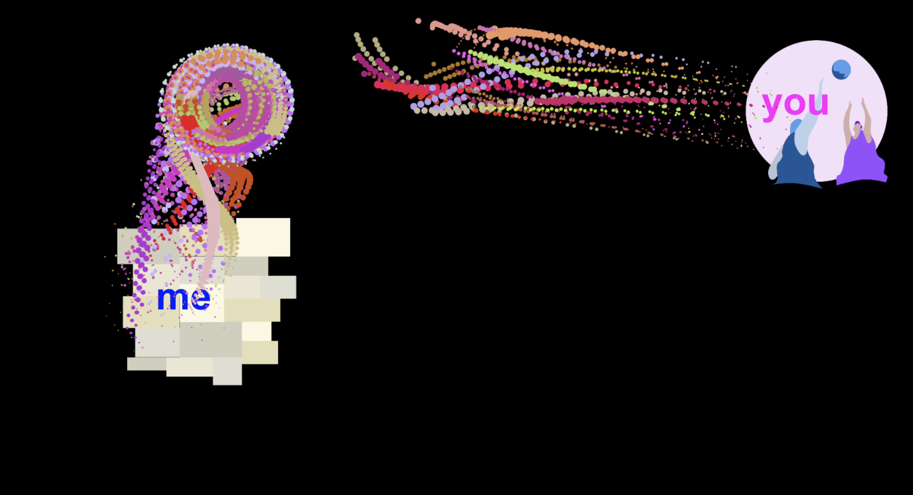
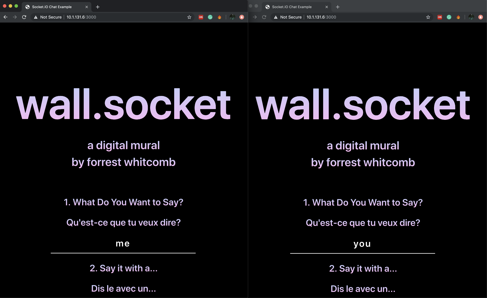
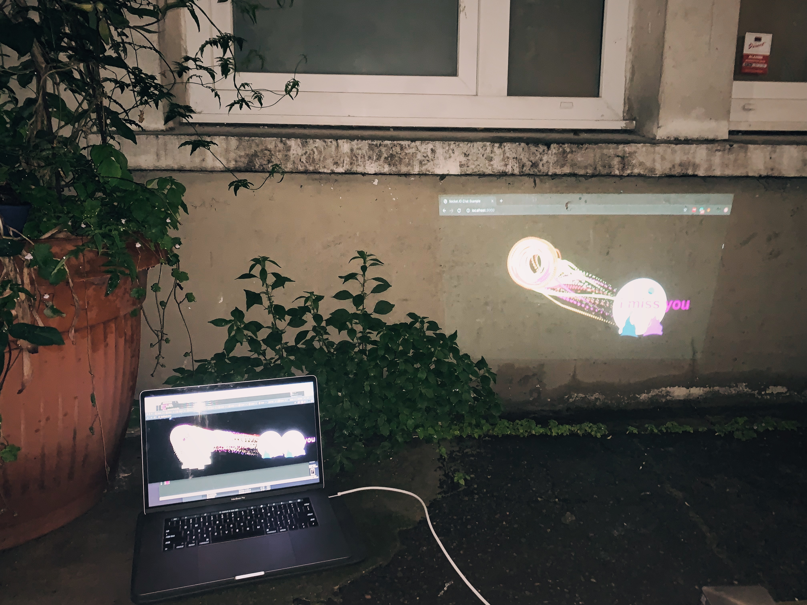
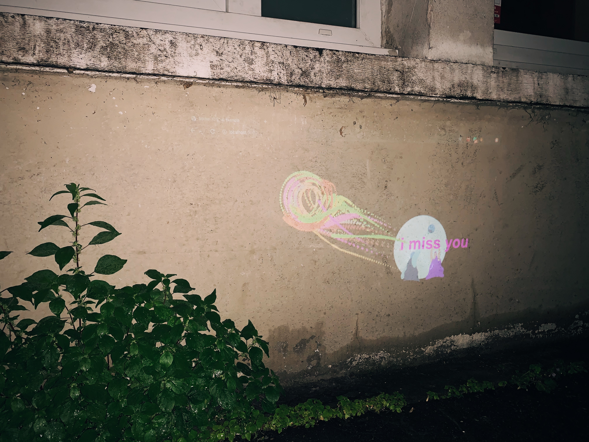

A project that allows individuals to engage and contribute to a digital in-situ mural from anywhere in the world
A project that connects and engages an audience through tech

How its made
Socket.io is a javascript library that allows us to build realtime web applications. It is made up of two parts: a server side running with node.js, and a client programme running through the browser. Socket.io allows us to create applications such as char tooms, but it also opens the doors for impressive modes of communication.
What I did
This was my first time using socket.io, and I had had limited understanding of how to create server-client applications. Most of my expeience with web sockets was using an arduino with Processing (a java framewor).
My first task was to get a socket.io demo up and running. This first chat room laid the groundwork for future developments.
With special backup from my instructor Sara, I was able to troubleshoot problems as they developed.

Challenges
The primary issue that was never fully resolved was the mobile versions, specifically tapping to place a labelled stamp. I suspect this is because in the version I
am currently showing, stamps are placed with mouse positions. My hypothesis is that I am not properly translating between touch point na dmouse, and thus certain aspects of my project are not being placed on the canvas.
Another further problem I found was my inability to properly direct the particle system. This again stems from a problem of sending infomation thorugh
the socket, but also an example of how my lack of javascript skills resulted in the code becoming extremely messy, making it difficult to decide where to position functions such as my particle system. WIth more time, I think I would be able to continue to streamline my code, making it easy to plu and paly with new developments.
A project that allows individuals to engage and contribute to a digital in-situ mural from anywhere in the world
A project that connects and engages an audience through tech


Currently I am having trouble finding a way to allow other users not on my network to access my server. This is something I will be working on to allow for my web apps to grow and be used by broader audiences.
Overall, the process of making my first socket-driven web app has been one of frustrations and excitements. It has both been a struggle and a rewarding experience. I am at the point where I am now going to elevate the current prototype, and make it a more high-functioning app.
Currently, my issues still mainly lay in my understanding of web sockets, which have led to some of my biggest issues, such as sending data, and new systemic issues such as being able to serve the application beyond just my immediate network. These are problems I plan to work on in the coming days.